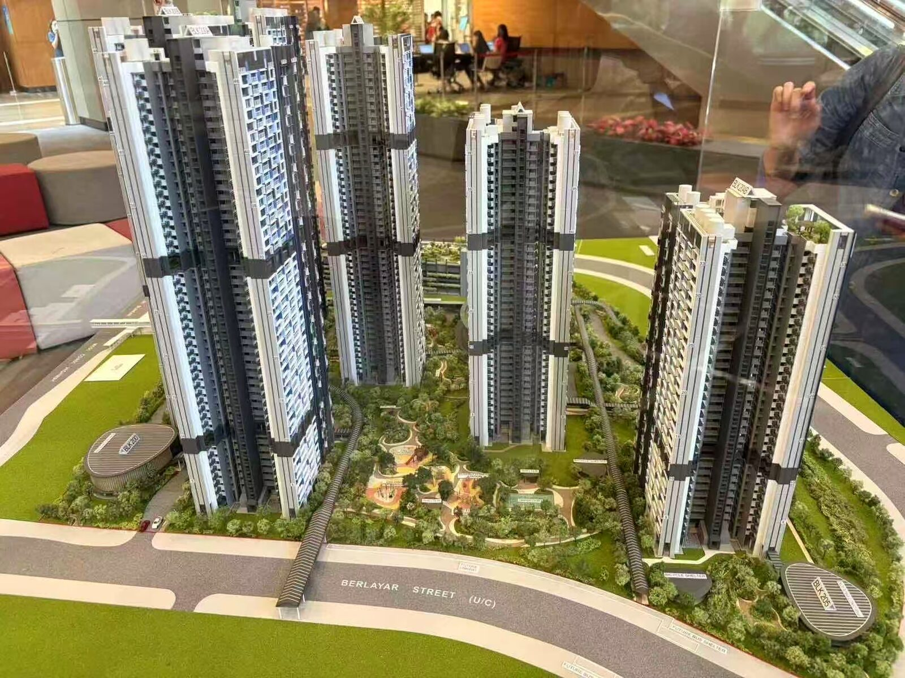
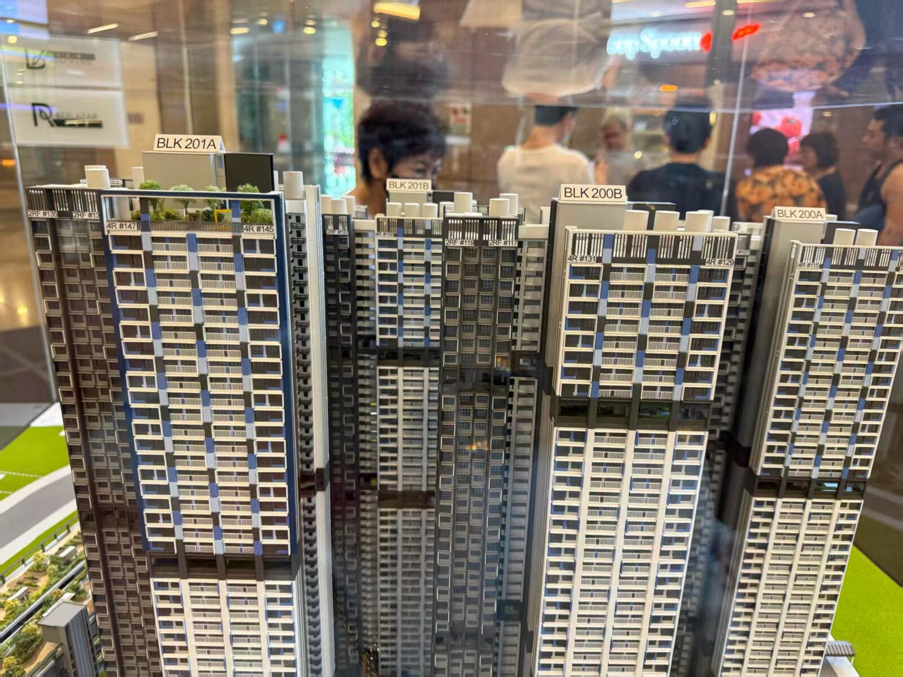
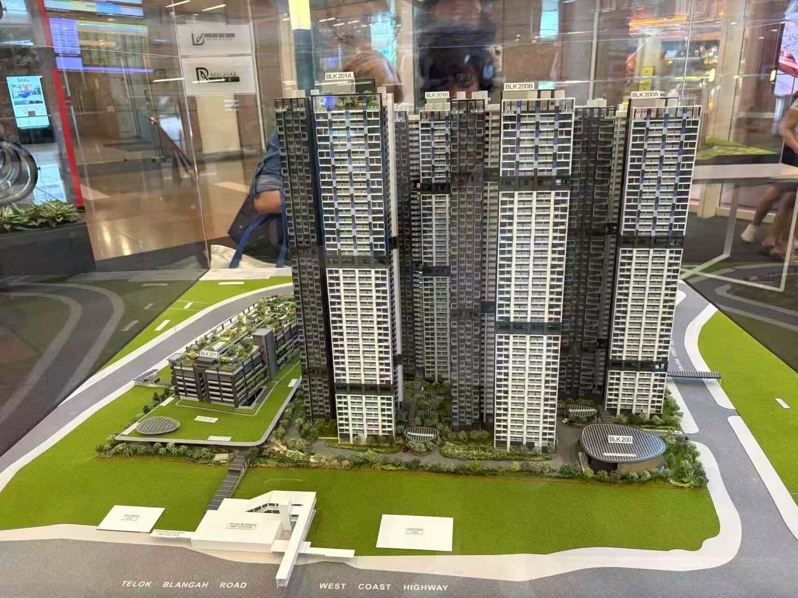
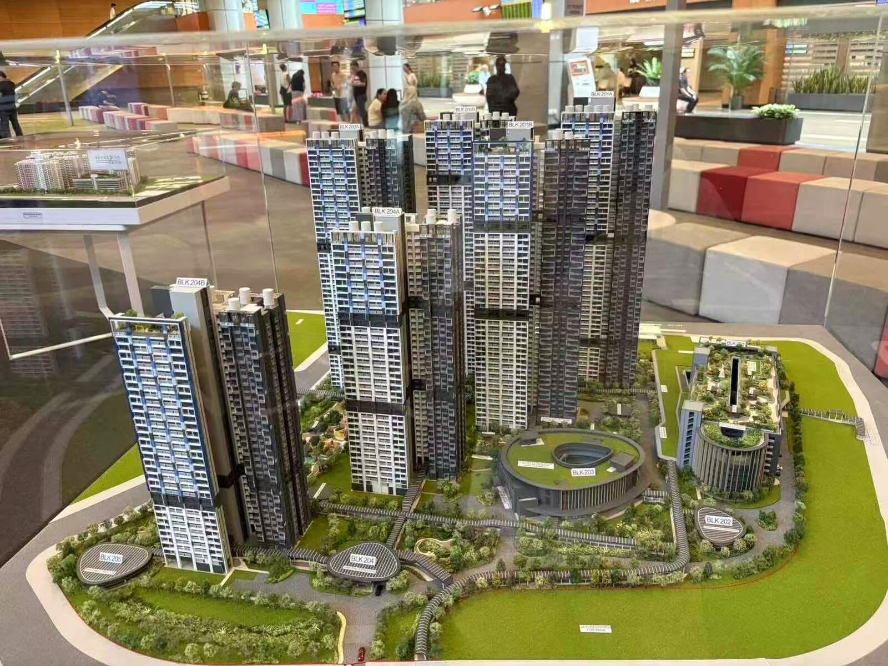
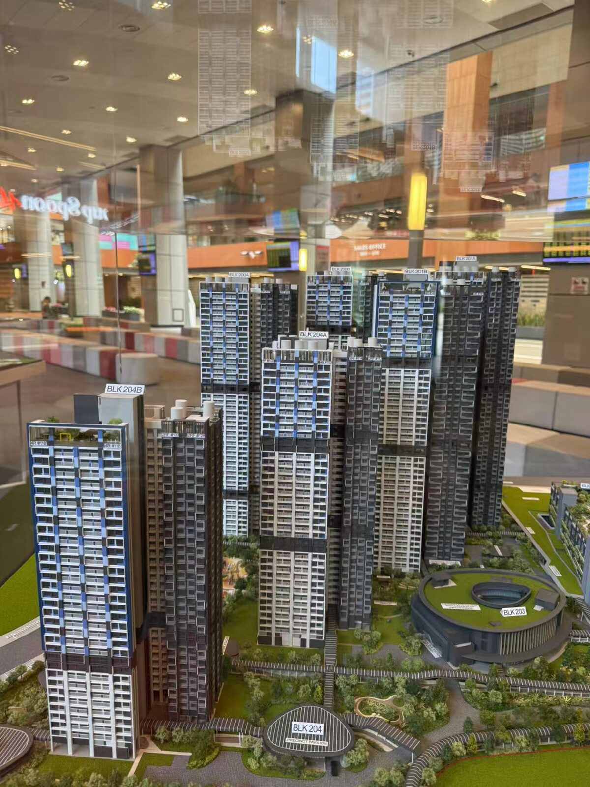
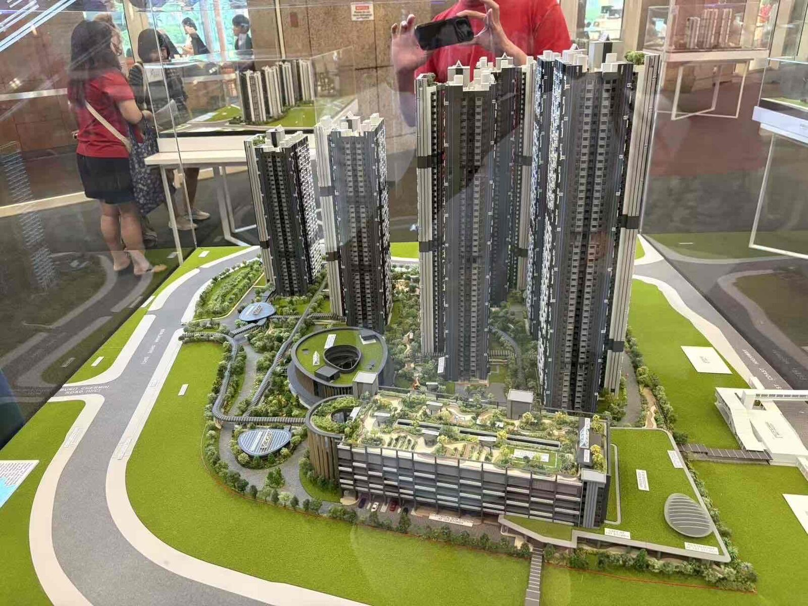
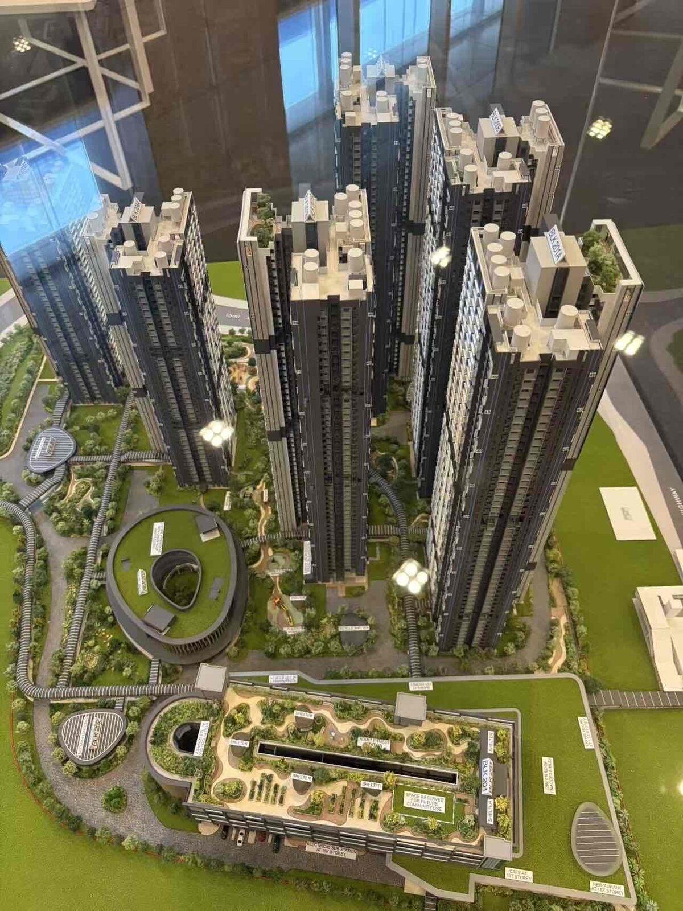

Prime 组屋条款
Prime 户型设有家庭月收入上限、10 年最低居住期（MOP）与转售限制（含补贴回收）。申请前先在 HDB 官网核对资格。
HDB BTO · 2026 年 6 月发售 · Prime 组屋
云看房 · 三维虚拟看房 · 户型推荐
Berlayar Rise 紧邻 Telok Blangah MRT，6 座 33–49 层塔楼共 1,976 个单位，2-Room Flexi / 3-Room / 4-Room 三种户型可选。

沙盘实拍 · 建筑商模型（来源 materials/photos）
建筑商售楼处沙盘模型实拍：6 座塔楼、空中花园、多层停车场与配套建筑一览无余。






6 座塔楼按真实楼层数建模（Blk 200A 46 层 … 204B 33 层），白色横带为空中花园层、顶层绿块为屋顶花园；点击彩色户型块查看该户型详情。3D 为体量与户型位置示意，外观细节以「沙盘实拍」为准。
3D 视图当前不可用（浏览器不支持 WebGL），请使用下方「沙盘实拍」与户型列表查看。3D view is unavailable in this browser (WebGL not supported).
户型与套号（stacks）来自 HDB 官方手册 UNIT DISTRIBUTION 页；价格以发售公告为准。
告诉我们家庭人数与偏好，按真实数据为你排序户型并给出理由。BTO 价格待发售公告，预算仅作参考。
针对 Berlayar Rise（Prime BTO）的实用选房建议，给未来的屋主。
Prime 户型设有家庭月收入上限、10 年最低居住期（MOP）与转售限制（含补贴回收）。申请前先在 HDB 官网核对资格。
BTO 采用抽签制：4-Room 分布在全部 6 座楼栋、套号最多；2-Room Flexi (Type 2) 也有 4 座楼栋可选。
2-Room Flexi 可选 55/45 年短租期，月供与 CPF 支出更低，适合年长买家；99 年租期则适合长期自住与家庭。
厨房橱柜、地板等可选组件（Optional Component Scheme）费用会并入房价，交房前按需勾选、量力而行。
紧邻 Telok Blangah MRT；6 层 MSCP 设超市、食阁与商铺、屋顶花园；Telok Blangah Beacon 新巴刹与熟食中心预计 2027 年落成。
名校包括 Blangah Rise Primary、CHIJ St. Theresa's Convent、Radin Mas Primary、CHIJ (Kellock)；毗邻 Southern Ridges 与多条公园连道。